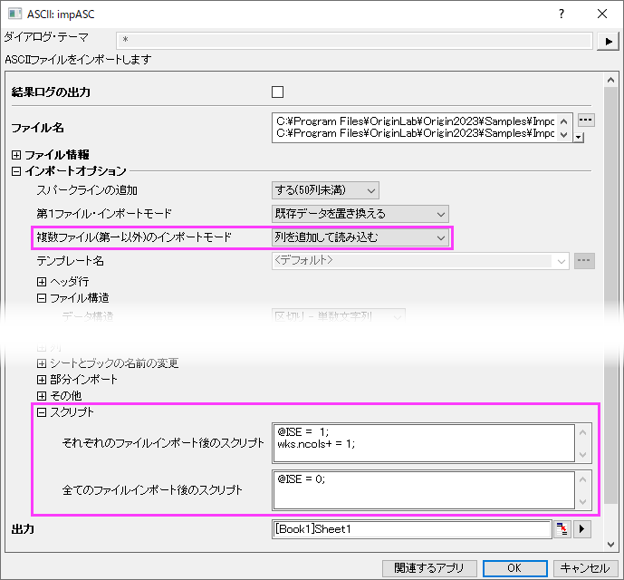

FAQ-1155 複数のファイルをシートにインポートし、各ファイルのデータを空の列で区切る方法は?
import-multiple-files-to-sheet
最終更新日：2022/11/4
これは、OriginのXファンクションルーチンのいずれでも動作するはずです（図のimpASCのように、データ：ファイルからインポートで開くダイアログでスクリプトノードがあるもの）
-
- 
- データ: ファイルからインポートでインポート形式を選択します。
- 複数ファイル（第一以外）のインポートモードで列を追加して読み込むを指定します。
- スクリプトノードを開き、それぞれのファイルインポート後のスクリプトボックスで以下を入力します。
@ISE = 1;
wks.ncols+ = 1;
- 全てのファイルインポート後のスクリプトボックスでは、以下を入力します。
@ISE = 0;
(これによりシステム変数@ISEをデフォルト値に戻します。)
- 必要に応じてほかのインポートオプションを設定し、OKをクリックします。これで、各ファイルが同じシートにインポートされ、それぞれのファイルのデータが空のワークシート列で区切られます。